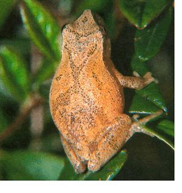
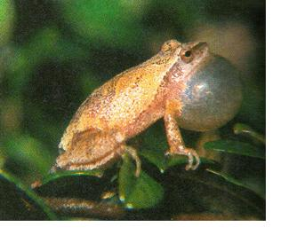
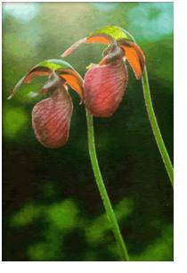
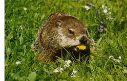
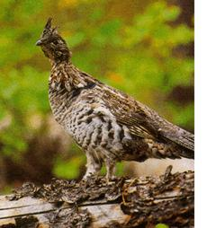

MOTHER'S NATURE
Let me be the first to greet you happy new year. No, not the first of sullen January, a day only calendar watching human could consider noteworthy, Nature's new year, the real deal: spring, Take a look around. See? The signs are everywhere.
In some regions beginning as early as March, in others as late as May, evenings ring with the shrill pipings of spring peepers. Collectively the chorus rises and falls, a lilting, pulsating chiming at once de licate, like tiny bells, and deafening: The music can be heard for more than a quarter of a mile. The voices are the mating calls of males singing to silent females. Just how a female singles out Mr. Right from among the choir is a mystery, though the male's age is thought to be a factor. Larger, older males sing faster and apparently more fetchingly. Listen carefully and occasionally you may hear sharper trillings, the notes and cadence more emphatic. These are "back off" calls, warnings to other males trespassing on a singer's territory of 4 to 14 square inches-a tiny bachelor pad, but big enough for a frog only slightly larger than a human's thumbnail.
Hovering, swinging left, then right, dipping earthward, rising buoyantly again: In April and May, falconlike Mississippi kites-aptly named for their graceful, floating flight-return to our skies from wintering grounds in Brazil and Argentina. Nineteenth-century naturalist Alexander Wilson first spotted the swooping, insect-eating raptors on a Natchez plantation in 1810-thus the Mississippi designation. Actually they're common throughout the southern Great Plains and are found elsewhere in varying numbers east and west, from Arizona and Colorado to South Carolina. Loss of original habitat, described by Audubon as along "rivers, lakes and bayous," and especially in bald cypress swamps, has forced kites to seek nest sites elsewhere, often in trees in notably human habitat such as golf courses. Kites defend nests fiercely, diving at and sometimes striking people who venture too close. Watch a kite sweep the skies for large insects such as grasshoppers, cicadas and dragonflies. With a screaming high-pitched phee phew the bird plunges rocketlike at a concentration of insects, brakes to snatch a victim, then glides as it gobbles its meal on the fly.
Think of orchids and you probably envision exotic tropical blooms. But orchids are the largest family of flowering plants, with at least 25,000 species described, and many grow in temperate regions. Among our largest and most common are the pink lady's slippers, which in early spring pop up like pink-chiffoned prom dates on a bare gym floor, brightening otherwise drab pine-oak forests across most of eastern North America. The plants get their name (and their nickname, moccasin flower) from the shoeshaped lower petal, a bulbous pouch with a deep ridge in the front: an enticing, one-way path for pollinators. Lured inside by droplets of sweet fluid (lady's slippers don't secrete true nectar), the pollinator, most often a mining bee, can escape only through one of two small exits at the sac's rear. To get there it must push its pollen-covered back beneath the plant's stigma, or female part, thus pollinating the plant. On its way out, a fleshy, green disc showers its back with pollen for the next come-hither orchid. Not all lady's slippers-in-waiting are pollinated before they wither. But just one mature seed pod produces 10,000 seeds, helping to ensure future generations.
You'd think a veggie-loving animal that had slept three to six months without eating-and lost 40 percent of its body weight in the process-would head straight for the nearest salad pickings. But woodchucks awakened from their long winter's naps are driven by hunger of another sort. Males immediately go burrow-hopping in search of females, which in turn do not play hard to get. The brief period during which a pair mates is virtually the only time adult woodchucks share a burrow. The male soon moves on; the female gives birth a month later to four or five blind, furless, toothless pups. At three months the young leave to establish their own burrows and gobble all the food they can before winter.
SUGAR RUSH
Its true that sap rises with the coming of spring. But sap falls, too, and moves side ways within a tree's elaborate circulatory system. Sap flow is hardly the sole domain of spring. Throughout the growing season, hollow vessels in a tree's sapwood, or xylem, conduct water and nutrients up from the roots to the leaves. Meanwhile, water laden with sugars and other products of photosynthesis flows downward from leaves to the branches, trunk and roots through pipelike cells in the phloem, or inner bark. In summer, transpiration-the loss of water vapor through leaves-is the pump that powers this two-way system. But the flow slows when a tree loses its leaves in autumn. Sugars are stored as starches in the trunk and roots for the winter. Then spring. Just before leaves unfurl, the starches change back into sugars, and root pressure-caused by water sucked from the soil-pushes a rush of sugary sap up through the tree to feed new plant parts. It's this short-lived gush of concentrated, pent-up sugars we humans eagerly tap into for syrup. Within weeks, freshly photosynthesizing leaves produce enzymes that make even a sugar maple trees sap less palatable.
Gardeners know too well the groundhog's gluttony and often welcome the animals with a .22-gun salute. But there's a good side to woodchucks, too: Their burrows provide homes for all manner of other wildlife, including rabbits, turtles and toads. Groundhogs also influence community plant diversity. By nibbling away perennials in the areas around their burrows, they provide nursery beds for seedproducing annuals, which supply food for birds and small mammals.
You say woodchucks; I say groundhogs Either way, their fleeting connubial bliss is dependable sign of spring.
The ruffed grouse, named for the black ruff feathers the male puffs up like an over size fur collar during courtship displays, is the most widespread native game bird in North America: a forest resident in nearly three dozen states and all of Canada's provinces. In the Far North it shares range with the spruce grouse, a bird otherwise known as a fool hen for its unwise habit of standing in the open and gawking at ap approaching humans. The ruffed grouse, in contrast, is secretive, elusive and quick to take flight hikers and hunters seldom get more than a glimpse. Sometimes, though (and in spring, often), you can hear the male's distinctive love call, a drumbeat that starts with a slow thump ... thump ... thump, and then quickens to a baritone roll. The sound was once thought to be produced by the bird's wings beating against its chest or a hollow log. But stop-motion photographs revealed the sound is made by the bird's cupped wings rapidly striking and compressing the air.
Of course, there's another sure-fire sign of spring, too: a distinctly human phenomenon known as spring fever. Like leaves bursting from winter buds, we throw open our cabin doors and breathe anew. Ah, spring at last: fresh, honest air, amiable weather, a clean slate, a whole new go at exploring life. Happy new year, indeed.
A handsome ruffed grouse emerges to search for the girl grouse of his dreams.
Terry Krautwurst, a former senior editor for MOTHER EARTH NEWS, is a nature writer who explores the world from his home in the mountains of western North Carolina.
|
 ? Sounds of the season include the rise-and-fall chorus of male peepers serenading for mates. Their songs serve as territorial markers, a pointed message from creatures slightly larger than a human thumbnail. |
 ? These delicate orchids are the ladies-in-waiting of spring. Pink lady's slippers get their name from their shoe-shaped petals, which also inspire their nickname, moccasin flowers. ?Among our largest and ?most common orchids are '[ne pink lady's slippers, which in early spring pop up like pink-chiffoned prom dates on a bare gym floor, brightening otherwise drab pine-oak forests across most of eastern North America. |
 |
|
 |
 |
|